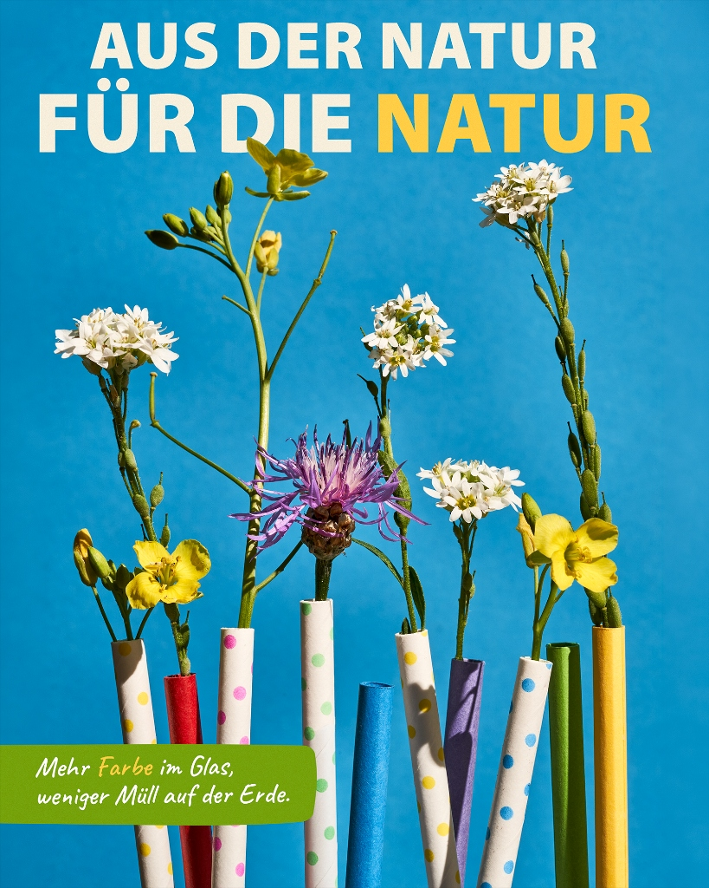
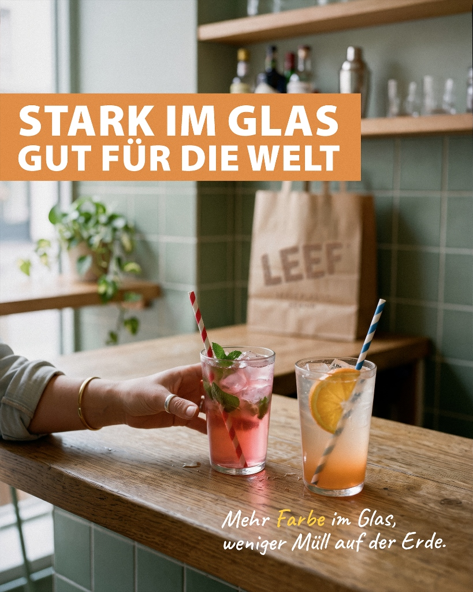
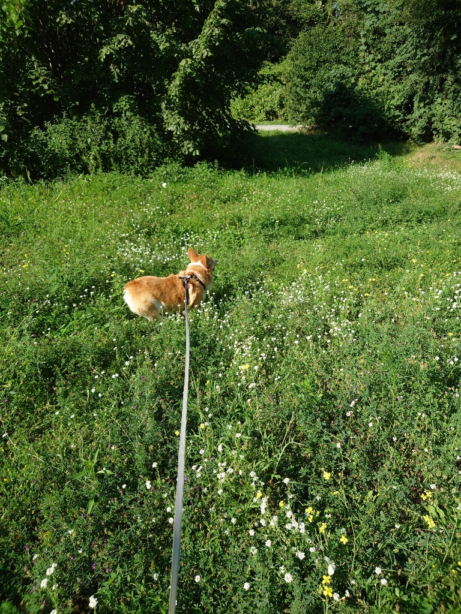
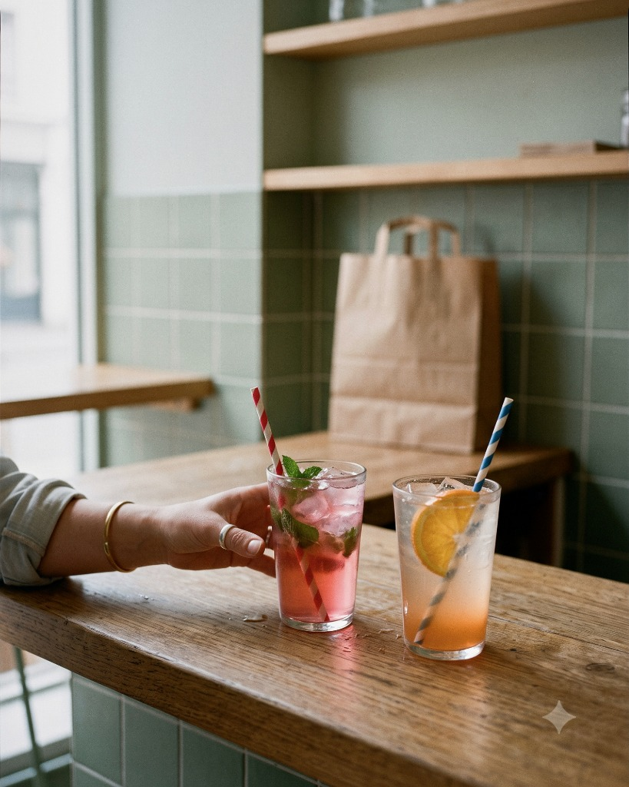

EIN KLEINER STROHHALM.
GROSSE WIRKUNG.
Wie verwandelt man ein alltägliches Produkt in eine aufmerksamkeitsstarke Bildserie? Studio-Fotografie vs. KI-Artwork.
Visual Lead & Senior Content Creator (10+ Jahre Erfahrung) • Produkt- & Food-Fotografie, KI-Art Direction
Ein künstlerisches Öko-Manifest für LEEF & wisefood, das Papier-Strohhalme kreativ mit frischen Wiesenblumen kombiniert, um die reine natürliche Herkunft zu zelebrieren.

Ein kommerzielles B2B-Visual, das LEEF Papier-Strohhalme in einem realen Bar-Ambiente zeigt.

Vom Spaziergang auf der Wiese bis zum gerichteten Studio-Licht:
Sammeln von frischem Hahnenfuss, Klee und Wegwarte beim Spaziergang mit dem Hund 🐕.

Commercial editorial photography, front shot of two vibrant summer drinks with striped paper straws on a wooden bar table. A hand reaching for one of the drinks. Minimalist interior with a muted sage-green tiled wall background, pastel colour palette, Wes Anderson aesthetic. In the soft blurred background, exactly one single craft paper bag sitting on a shelf. Slightly asymmetrical, candid everyday life moment, a few small condensation water droplets on the wooden bar counter. Soft lighting, vibrant drink colours, gentle highlights, photorealistic, cinematic 1970s magazine look. 35mm film photography shot on Leica M6, Kodak Portra 400 film grain, subtle halation, warm organic tones. Natural slight imperfections, soft focus falloff, Soft cinematic bloom in the highlights --ar 4:5
Generierung der Szenerie mit Fokus auf natürliche Beleuchtung.

Als Allrounder verbinde ich die Effizienzpotenziale von KI mit der Unersetzbarkeit von echter Fotografie.
Fotografie liefert 100% haptische Präzision der Textur, KI bietet unendliche Geschwindigkeit bei der Konzept-Exploration und dem B2B-Kontext.
Jedes Visual löst eine klare Business-Aufgabe: vom Öko-Manifest der Marke bis zur nahtlosen Integration in moderne Cafés und Bars.
Abdeckung des gesamten Zyklus: vom Blumen-Sourcing auf der Wiese und Studio-Licht-Setup bis hin zu Prompting und finalem Layout.
{kind=link}
{kind=link}
{kind=link}
{kind=link}